ChatGPT로 자료를 모으고, 분석하고, 보고서·기획서까지
오늘은 ChatGPT 유료 계정 하나로 최신 동향을 찾고, 긴 문서를 요약하고, 공공기관 문체의 보고서·기획서까지 완성해 봐요. 오전에는 웹 검색과 파일 요약, Projects로 문서의 뼈대와 문체를 잡고, 오후에는 공공데이터로 표와 그림을 만든 뒤 실무 기획서를 직접 써 봐요. 모든 단계는 강사가 먼저 화면으로 보여 드리고, 같은 순서로 천천히 따라 해요.
교육 개요
| 시간 | 10:00–17:00 (점심 12:30–13:30, 실습 6시간) |
|---|---|
| 진행 방식 | 단계마다 강사가 먼저 시연하고, 같은 화면으로 천천히 따라 해요. 막히면 바로 손을 들어 주세요. |
| 도구 | ChatGPT 유료(Plus 이상): 웹 검색, 파일 첨부, Projects, 데이터 분석, Word·PDF 파일 만들기 / NotebookLM: 인포그래픽 |
| 교육 목표 | 생성형 AI로 자료를 모으고 요약·분석해, 공공기관 문체의 보고서·기획서를 일관성 있게 작성할 수 있다. |
| 수업이 끝나면 | ① AI에게 역할·맥락·작업·형식 4요소로 요청한다 ② 웹 검색과 첨부 파일 요약 결과를 출처로 확인한다 ③ Projects에 지침을 고정해 개조식 보고서를 만든다 ④ 데이터를 표·차트·인포그래픽으로 바꾼다 ⑤ 내 업무 주제로 기획서를 완성해 발표한다 |
수업 전 준비
오늘 수업은 브라우저에서 진행해요. 아래 세 가지를 미리 준비해 주세요.
- ChatGPT 계정: chatgpt.com에 유료(Plus 이상) 계정으로 로그인해 두세요.
- NotebookLM 계정: notebooklm.google.com에 구글 계정으로 로그인해 두세요. 세션 4에서 써요.
- 실습 파일: 아래 4개 파일을 내려받아 바탕화면에 저장해 두세요. 각 세션에도 같은 다운로드 버튼이 있어요.
실습 파일
모두 공공데이터포털에 공개된 자료예요. 실습하기 편하도록 일부는 형식을 바꿔 두었어요.
| 파일 | 한 행이 뜻하는 것 | 기준 |
|---|---|---|
| biz100_202607.csv | 시군구 한 곳의 업종 하나 (예: 가구점 · 서울특별시 · 종로구 · 17 · 17 · 18) | 당월 2026년 7월, 전월 2026년 6월, 전년동월 2025년 7월 사업자 수(개) |
| biz100_202607_sido.xlsx | 시도 한 곳의 업종 하나 (16개 시도 × 100개 업종) | 위 CSV의 시군구 숫자를 시도별로 더한 값 |
| daily_econ_20261014.hwp · pdf | 지표 하나 (예: KOSPI, 원/달러 환율) | 2026년 10월 14일 16:00 현재. 표마다 날짜 열이 달라요 |
출처: 국세청_사업자현황_100대 생활업종(2026-07-31) · 재정경제부_일일경제지표, 공공데이터포털 이용허락범위 제한 없음 · 2026-10-15 확인
타임테이블
| 시간 | 세션 | 내용 | ChatGPT 기능 |
|---|---|---|---|
| 10:00–10:30 | 1. 생성형 AI와 문서 작성 개요 | 화면 맞추기 · 기존 방식 vs AI 활용 · 공공기관 업무용 AI 도구 · 4요소 기초 프롬프트 | 새 채팅, 모델 선택 |
| 10:30–11:30 | 2. 웹 브라우징 & 긴 문서 파일 분석 | 최근 정책·동향 수집 · PDF/한글/엑셀 3줄 요약 · 출처 확인과 환각 방지 | 웹 검색, 파일 첨부 |
| 11:30–12:30 | 3. Projects & 공공 행정 문체 변환 | 보고서·기획서 뼈대 · 개조식 문체와 서식 · 자주 쓰는 지침 고정 | Projects, Word·PDF 파일 |
| 12:30–13:30 | 점심 (과정 진행에 따라 시간 변경 가능) | ||
| 13:30–14:30 | 4. 데이터 분석 & 인포그래픽 변환 | 데이터 요약·표 · 보고서용 표·차트 · 글을 인포그래픽으로 | 데이터 분석, 차트 / NotebookLM |
| 14:30–16:00 | 5. 가이드 기반 실무 기획서 제작 | 예시 주제 선정 → Step 1 자료 수집·요약 → Step 2 초안 → Step 3 문체·시각화 | 전체 |
| 16:00–17:00 | 6. 결과 발표 및 피드백 | 완성본 공유 · Q&A · 총평 | - |
생성형 AI와 문서 작성 개요
모두 같은 ChatGPT 화면과 모델로 맞추고, 기존 방식과 AI 활용 방식을 비교해요. 마지막으로 AI에게 역할·맥락·작업·형식 4요소로 요청하는 법을 익혀요.
1-1. 시작 전: ChatGPT 화면 살펴보고 맞추기
실습을 시작하기 전에 자주 쓰는 곳을 확인하고 모두 같은 설정으로 맞춰요. 설정이 다르면 같은 프롬프트를 보내도 답의 모양이 달라져요.

| 위치 | 이름 | 하는 일 |
|---|---|---|
| 위쪽 가운데 | [Chat] / [Work] | 오늘은 [Chat]에서 실습해요. [Work]는 긴 작업을 맡기는 별도 화면이에요. |
| 가운데 | 입력창 | 프롬프트를 붙여 넣고 Enter로 보내요. 줄을 바꿀 때는 Shift+Enter를 눌러요. |
| 입력창 왼쪽 | [+] | [사진 및 파일 추가]로 파일을 올리고, [웹 검색]을 켜요. |
| 입력창 오른쪽 | Instant | 모델과 추론 수준이 보여요. 오늘은 Instant로 맞춰요. |
| 오른쪽 위 | 임시 채팅 | 기록에 남지 않는 대화를 열어요. 맨 아래 참고사항에서 다시 봐요. |
모델과 추론 수준 맞추기
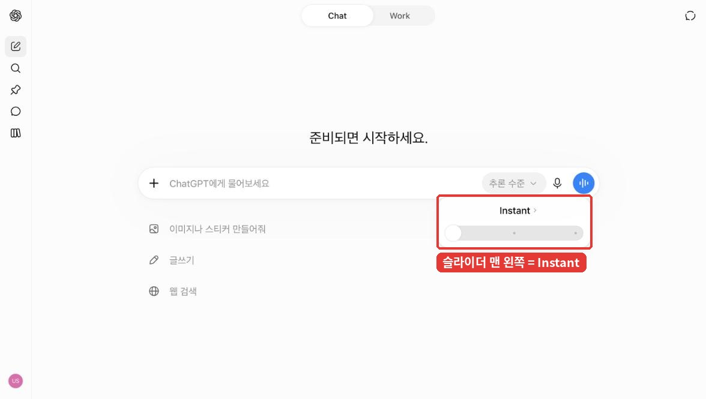
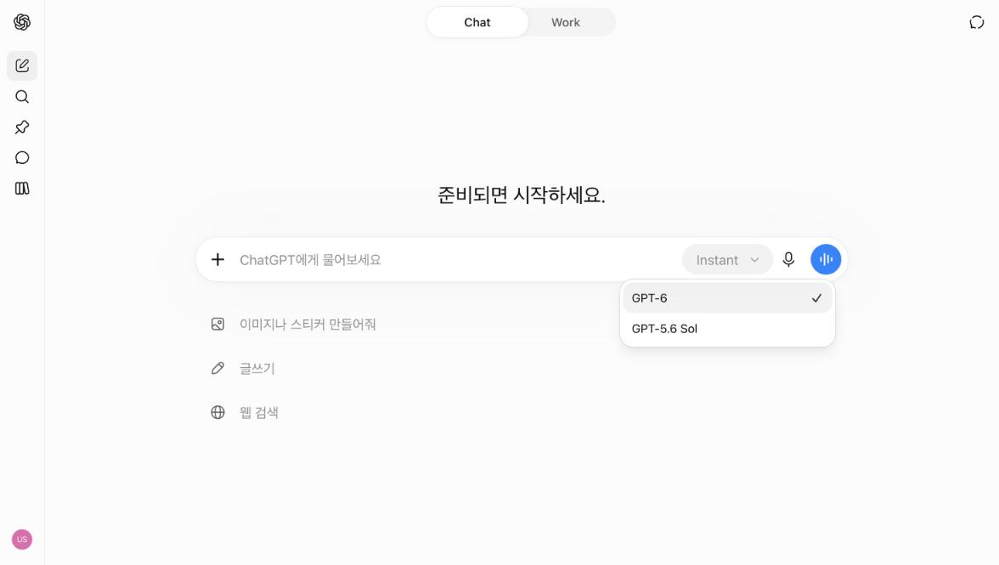
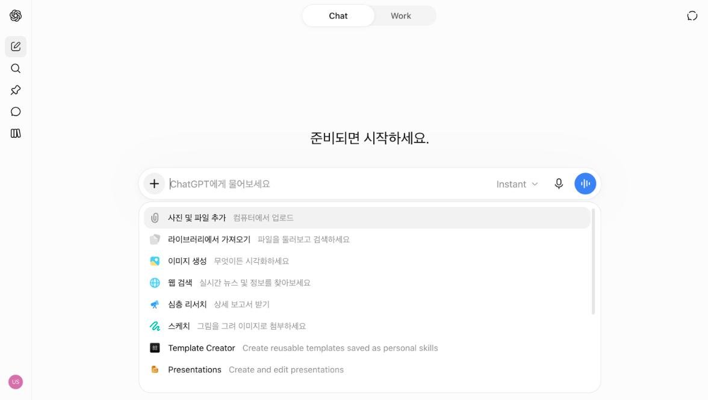
1-2. 기존 문서 작성 vs AI 활용 비교
같은 보고서를 만들 때 일하는 순서가 어떻게 달라지는지 비교해 봐요.
| 단계 | 기존 방식 | AI 활용 방식 | 사람이 꼭 할 일 |
|---|---|---|---|
| 자료 조사 | 검색창에 여러 번 검색하고 자료를 직접 모아요 | [웹 검색]이 여러 출처를 찾아 요약하고 링크를 달아요 | 출처를 열어 숫자와 날짜가 맞는지 확인 |
| 자료 읽기 | 긴 PDF·한글 파일을 처음부터 읽어요 | 파일을 올리면 핵심을 몇 줄로 요약해요 | 요약의 숫자가 원문과 같은지 대조 |
| 구성·문체 | 예전 보고서를 열어 목차와 문체를 베껴요 | Projects에 지침을 고정해 두면 같은 문체로 써요 | 우리 기관 서식과 독자에 맞는지 판단 |
| 데이터 정리 | 함수와 피벗을 직접 만들어요 | 말로 요청하면 표와 차트를 만들어요 | 기준값과 대조해 계산이 맞는지 확인 |
| 검토 | 선배나 팀장이 읽고 빨간 펜 | 출처 확인과 일관성 점검을 요청해요 | 최종 승인과 책임 |
AI가 초안을 빠르게 만들수록 관리자의 일은 두 가지로 모여요. 무엇을, 누구에게, 왜 쓰는지 정하는 일과 결과가 맞는지 확인하고 승인하는 일이에요. 팀원이 AI로 만든 보고서를 받으면 "출처는 어디인가요?", "이 숫자는 어떻게 계산했나요?", "AI가 쓴 부분 중 직접 고친 곳은 어디인가요?"를 물어보세요.
1-3. 공공기관 업무에 맞는 AI 도구
오늘은 ChatGPT 안의 기능을 단계에 맞게 골라 써요. 기관에서 쓸 수 있는 도구와 올려도 되는 자료의 범위는 기관 보안 기준을 먼저 확인해요.
| 기능 | 이럴 때 써요 | 오늘 쓰는 세션 |
|---|---|---|
| ChatGPT [웹 검색] | 최근 정책·동향을 출처 링크와 함께 찾을 때 | 세션 2, 5 |
| ChatGPT 파일 첨부 | PDF·한글·엑셀·CSV 파일을 요약하거나 분석할 때 | 세션 2, 4 |
| ChatGPT Projects | 자주 쓰는 지침과 자료를 한곳에 고정해 두고 계속 쓸 때 | 세션 3, 5 |
| ChatGPT 데이터 분석 | 표 데이터를 점검·집계하고 차트를 만들 때 | 세션 4 |
| ChatGPT Word·PDF 파일 만들기 | 완성한 보고서를 내려받을 수 있는 파일로 받을 때 | 세션 3, 5 |
| NotebookLM 인포그래픽 | 넣은 글만 바탕으로 한 장짜리 그림을 만들 때 | 세션 4 |
기능 설명 출처: Searching the web with ChatGPT · Projects in ChatGPT · ChatGPT release notes, OpenAI Help Center · 2026-10-15 확인
1-4. AI에게 쉽게 말 걸기: 역할·맥락·작업·형식
AI에게 일을 시키는 요청 글을 프롬프트라고 해요. 목표와 기준이 없으면 AI는 내 상황을 추측해서 채워요. 오늘은 모든 프롬프트를 네 줄로 써요.
실습 1. 한 줄만 보내기 — 새 채팅을 열고 아래 한 줄만 보내요.
주간 업무 보고서 써 줘

실습 2. 4요소로 보내기 — 새 채팅을 열고 [ ] 안을 내 업무로 바꿔 보내요.
역할: 너는 공공기관 부서의 보고서 작성을 돕는 기획 담당자야. 맥락: 나는 [지역본부 운영팀] 팀장이고, 매주 월요일 [본부장]에게 주간 업무를 보고해. 이번 주 한 일은 [① 하반기 사업 예산 집행 점검 ② 민원 응대 매뉴얼 개정 초안 작성 ③ 신규 직원 2명 업무 교육]이야. 다음 주에는 [매뉴얼 개정안을 부서 회의에 상정]해. 작업: 위 내용으로 주간 업무 보고서 초안을 써 줘. 내가 준 내용에 없는 일이나 숫자는 추가하지 마. 형식: 개조식, A4 반 쪽 이내. 항목은 '추진 실적 / 다음 주 계획 / 건의 사항' 순서로, 내용이 없는 칸은 [확인 필요]로 남겨 줘.
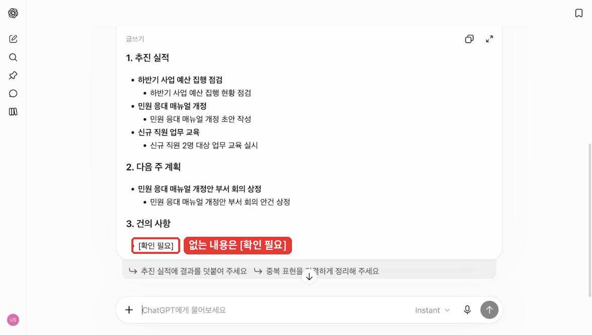
웹 브라우징 & 긴 문서 파일 분석
[웹 검색]으로 최근 동향을 모으고, PDF·한글·엑셀 파일을 3줄로 요약한 뒤, 숫자를 원문과 대조하는 법을 익혀요.
2-1. [웹 검색]으로 최근 정책·동향 수집
보고서 '배경'에 넣을 최근 동향을 모아요. 오늘 예시는 생활밀접업종(소상공인·자영업) 동향이에요. 내 업무 주제가 있다면 [ ] 안을 바꿔서 해도 좋아요.
역할: 너는 공공기관 기획부서의 자료 조사 담당자야. 맥락: 다음 주 부서 회의에서 '[최근 생활밀접업종(소상공인·자영업) 동향]'을 짧게 보고해야 해. 작업: 최근 3개월 안에 정부·공공기관이 발표한 자료를 찾아 핵심 내용을 5줄로 요약해 줘. 출처를 찾지 못한 내용은 쓰지 마. 형식: 5줄 글머리표. 줄마다 끝에 (기관명, 발표일, 링크)를 달아 줘.
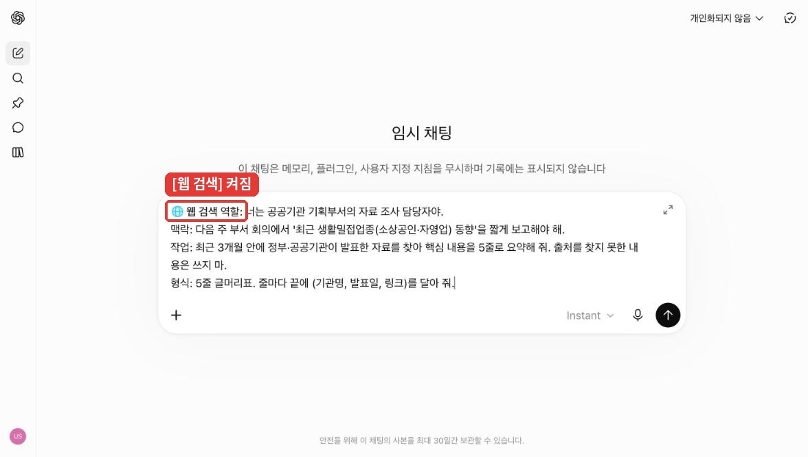

2-2. PDF·한글·엑셀 파일 첨부하고 핵심 3줄 요약받기
긴 문서를 다 읽지 않고도 핵심을 먼저 잡아요. 역할·맥락·작업·형식 4요소로 세 가지 형식의 파일을 하나씩 올려 요약하고, PDF에서는 숫자의 기준 날짜까지 확인해요.
실습 ① 한글(.hwp) 파일 요약
역할: 너는 부서장에게 올릴 자료를 요약하는 담당자야. 맥락: 첨부한 파일은 재정경제부의 「일일경제지표(26.10.14)」야. 오늘 아침 회의에서 경제 상황을 1분 안에 공유해야 해. 작업: 파일 내용을 핵심 3줄로 요약해 줘. 파일에 없는 숫자나 해석은 추가하지 마. 형식: 3줄 글머리표. 줄마다 근거 숫자와 파일 속 항목 이름(예: [주가] KOSPI)을 괄호로 달아 줘.

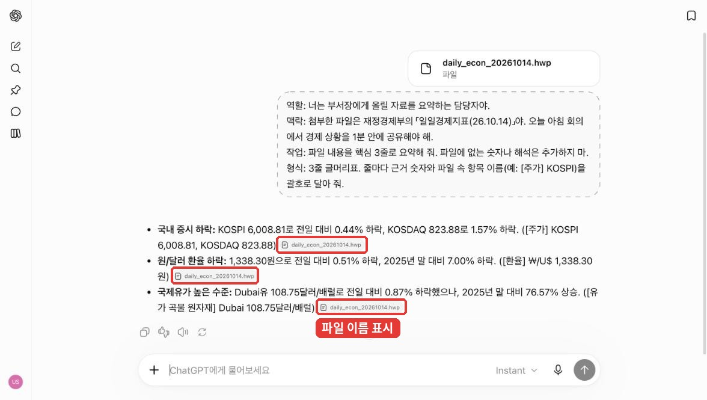
| 원본에서 확인할 숫자 | 값 | 원본 표의 날짜 열 |
|---|---|---|
| [주가] KOSPI | 6,008.81 (전일비 △0.44%) | 10/14 |
| [주가] KOSDAQ | 823.88 (전일비 △1.57%) | 10/14 |
| [환율] ￦/U$ | 1,338.30 (전일비 △0.51%, 25말비 △7.00%) | 10/14 |
| [유가 곡물 원자재] Dubai | 108.75 $/배럴 (25말비 76.57%) | 10/13 |
원본의 △는 감소(마이너스)를 뜻해요.
실습 ② PDF 파일로 날짜까지 확인하기 — 새 채팅에서 daily_econ_20261014.pdf를 올리고 보내요.
역할: 너는 보고자료의 숫자를 확인하는 담당자야. 맥락: 첨부한 PDF는 「일일경제지표(26.10.14)」야. 표마다 날짜 열이 다를 수 있어. 작업: 핵심 3줄로 요약해 줘. 숫자마다 그 숫자가 며칠 기준인지 표의 날짜 열을 보고 함께 적어 줘. 파일에 없는 내용은 추가하지 마. 형식: 3줄 글머리표, 줄마다 (항목 이름, 기준 날짜, 숫자)

실습 ③ 엑셀(.xlsx) 파일 요약 — 새 채팅에서 biz100_202607_sido.xlsx를 올리고 보내요.
역할: 너는 부서장에게 올릴 자료를 요약하는 담당자야. 맥락: 첨부한 엑셀 파일은 국세청의 100대 생활업종 사업자 현황(2026년 7월)을 시도·업종별로 정리한 표야. 파일의 '자료 안내' 시트에 기준이 있어. 작업: 파일 내용을 핵심 3줄로 요약해 줘. 파일에 없는 숫자나 해석은 추가하지 마. 형식: 3줄 글머리표. 줄마다 근거 숫자를 달고, 마지막에 '계산에 쓴 행 수'를 한 줄로 알려 줘.

| 기준값 | 당월(2026.7) | 전월(2026.6) | 전년동월(2025.7) |
|---|---|---|---|
| 100대 생활업종 사업자 수 합계 | 3,132,186개 | 3,130,650개 (+1,536) | 3,098,764개 (+33,422) |
숫자가 다르면 "계산에 쓴 행 수와 시트 이름을 알려 줘"라고 물어보세요. '자료 안내' 시트까지 더했는지 확인할 수 있어요.
2-3. 출처 확인과 환각(Hallucination) 방지 기초
AI가 사실이 아닌 내용을 그럴듯하게 만들어 내는 것을 환각이라고 해요. 보고서에 들어갈 숫자는 새 채팅에서 한 번 더 확인해요. 2-1 결과에서 숫자가 들어간 문장 하나를 골라요.
역할: 너는 보고서에 들어갈 숫자를 검증하는 담당자야. 맥락: 부서 회의 보고자료에 아래 문장을 넣으려고 해. "[2-1 결과에서 고른, 숫자가 들어간 문장]" 작업: 이 문장이 사실인지 기관 원문을 찾아 확인해 줘. 원문을 직접 열어 보지 못했다면 그렇다고 밝혀 줘. 형식: 판정(사실 / 일부 사실 / 확인 불가) 한 줄, 근거가 된 출처 2개 이상(기관명·발표일·링크), 원문에서 가져온 문장 1줄
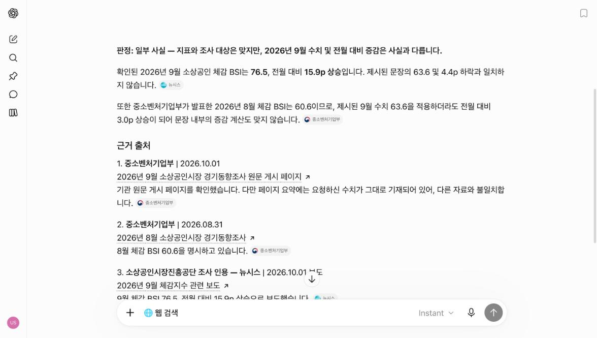
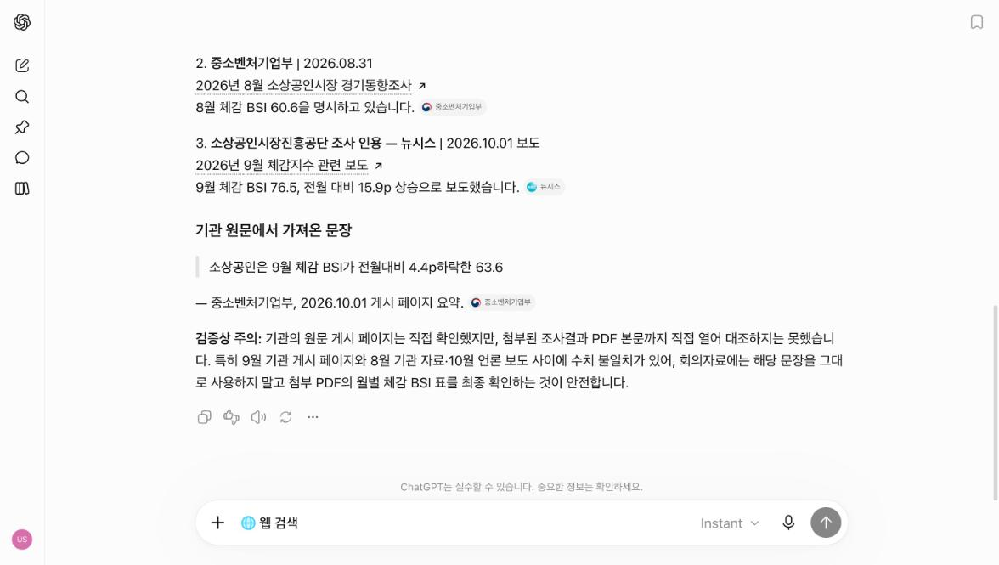
Projects 기능 & 공공 행정 문체 변환
보고서·기획서의 뼈대를 익히고, Projects에 문체 지침과 자료를 고정해 둔 뒤, 뼈대 생성 → 개조식 보고서 → Word·PDF 파일까지 이어서 만들어요.
3-1. 보고서·기획서 기본 구조
보고서는 있었던 일을 근거로 전달하고, 기획서는 앞으로 할 일을 설득해요. 목적이 다르니 뼈대도 달라요.
| 문서 | 구성 | 각 부분에 쓰는 것 | 공공기관 서식 항목 |
|---|---|---|---|
| 보고서 | 서론 | 왜 쓰는지(목적), 무엇을 다루는지(범위·기간) | 개요 |
| 본론 | 자료와 분석 결과, 표·차트 같은 근거 | 현황 · 문제점 | |
| 결론 | 핵심 결과 한 줄, 다음에 할 일 제안 | 개선방안 · 향후 계획 | |
| 기획서 | 배경 | 현황과 문제, 왜 지금 해야 하는지 | 추진 배경 |
| 목표 | 무엇을 언제까지 얼마나 이루려는지 | 목표 | |
| 실행 | 실행 방안, 기대 효과, 일정 | 추진 내용 · 기대 효과 · 추진 일정 |
3-3에서는 서론·본론·결론으로 뼈대를 잡고, 3-4에서 오른쪽 열의 공공기관 서식 항목으로 바꿔요. 3-2의 프로젝트 지침도 오른쪽 열 순서를 따라요.
섹션 간 논리 연결을 지키는 네 가지 기준: ① 서론(개요)의 목적에 결론(향후 계획)이 직접 답해요. ② 본론에서 문제점의 숫자가 현황의 숫자와 같아요. ③ 같은 대상을 끝까지 같은 이름으로 불러요. ④ 숫자마다 기준 날짜가 맞게 적혀 있어요.
3-2. Projects로 자주 쓰는 지침 고정하기
프로젝트는 대화, 파일, 지침을 한곳에 모아 두는 작업 공간이에요. 지침을 한 번 넣어 두면 그 프로젝트의 모든 대화가 같은 규칙으로 답해요. 매번 "개조식으로, 출처 달아서"를 쓰지 않아도 돼요.
STEP 1. 프로젝트 만들기
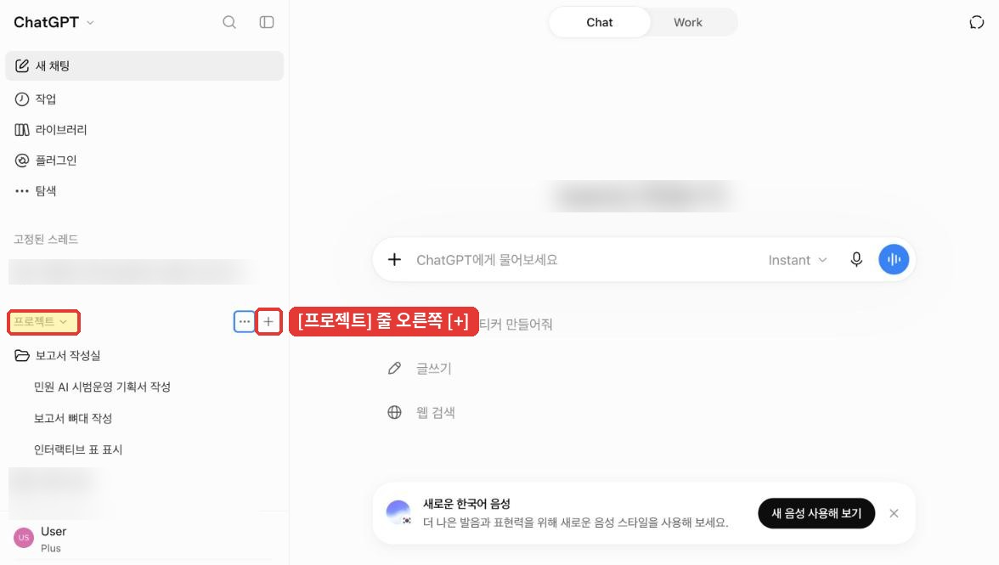
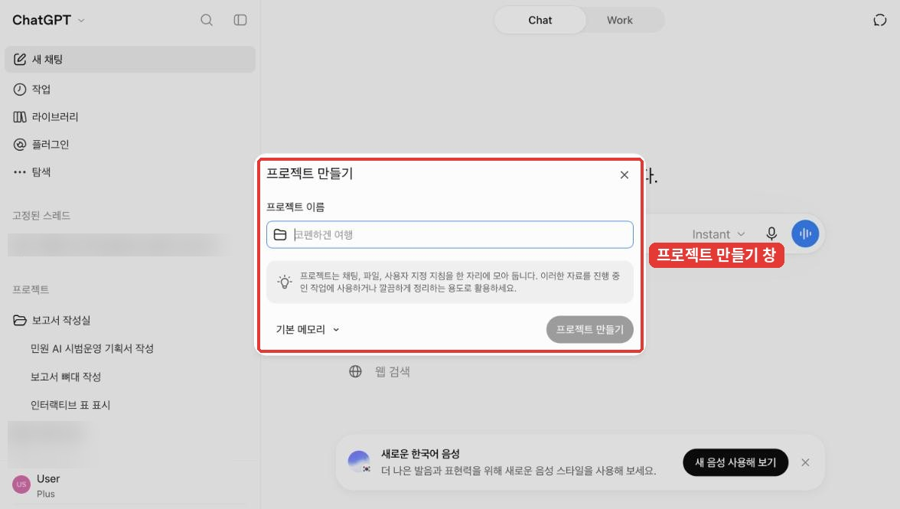
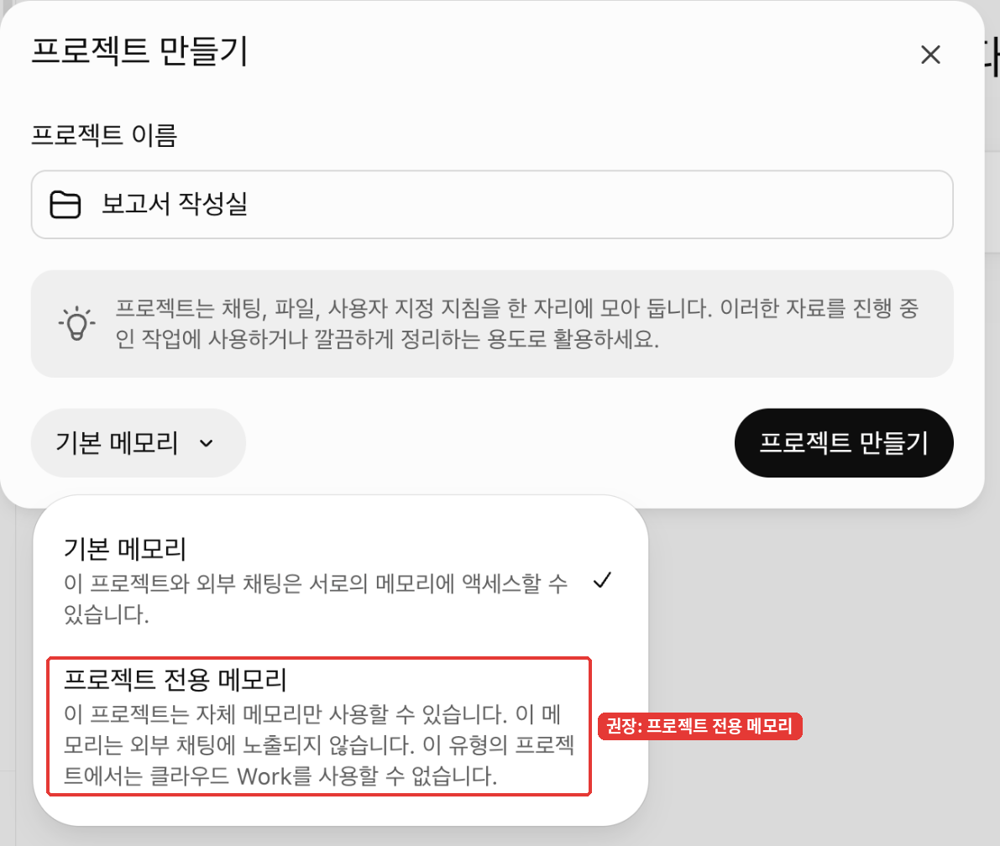
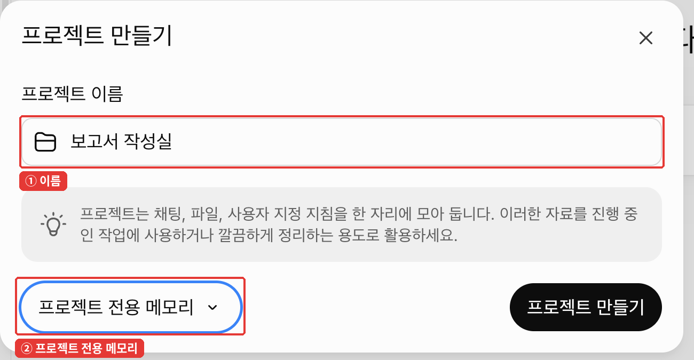
STEP 2. 지침 넣기
이 프로젝트의 모든 문서는 아래 규칙을 따른다. 1. 문체: 개조식으로 쓰고, 문장 끝은 '~함', '~임', '~예정'처럼 명사형으로 끝낸다. 2. 항목 기호: □(큰 항목) → ○(중간 항목) → -(세부 내용) 순서로 쓴다. 3. 숫자: 천 단위 쉼표와 단위(개, 원, %)를 붙이고, 증감은 '전년 동월 대비 1.1% 증가'처럼 비교 기준을 함께 쓴다. 4. 자료에 없는 숫자·기관명·날짜는 만들지 않고 [확인 필요]로 남긴다. 5. 출처: 숫자가 들어간 항목 끝에 (출처: 기관명, 기준일)을 단다. 6. 보고서는 '개요 - 현황 - 문제점 - 개선방안 - 향후 계획', 기획서는 '추진 배경 - 목표 - 추진 내용 - 기대 효과 - 추진 일정' 순서를 기본으로 한다.
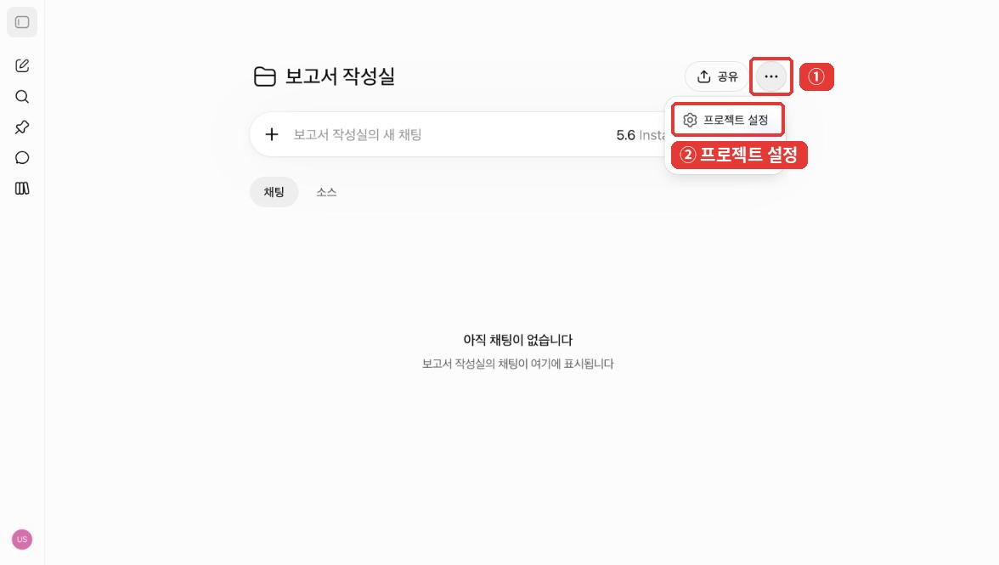
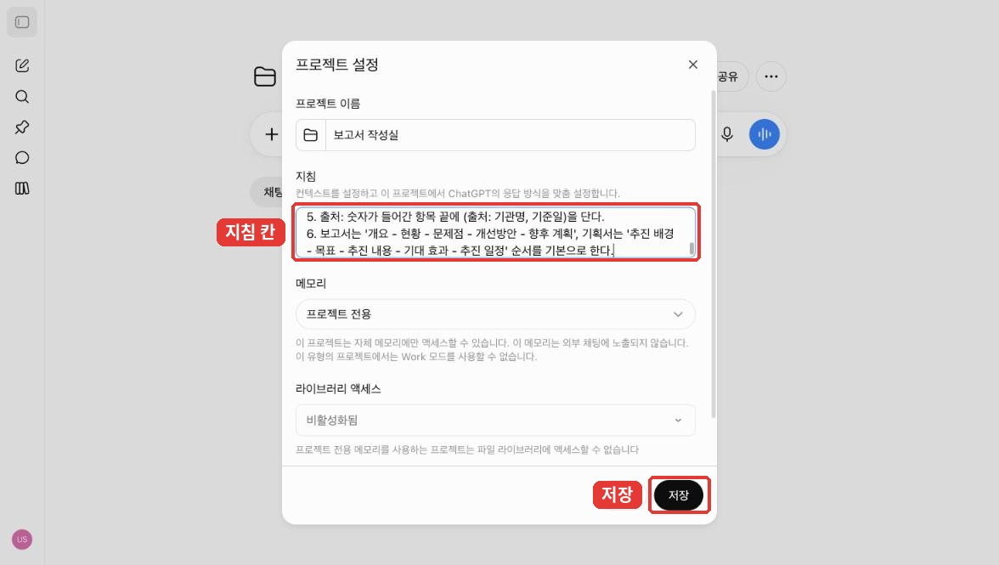
STEP 3. 자주 쓰는 자료를 소스로 올리기
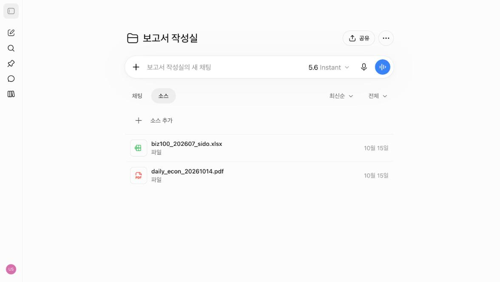
출처: Projects in ChatGPT (프로젝트당 파일 수 Plus 25개 등), OpenAI Help Center · 2026-10-15 확인
3-3. 보고서 뼈대(서론-본론-결론) 자동 생성
프로젝트 화면 위쪽 입력창("보고서 작성실의 새 채팅")에서 요청해요. 지침이 이미 들어 있어서 문체 규칙은 다시 쓰지 않아도 돼요.
역할: 너는 공공기관 기획부서의 보고서 작성 담당자야. 맥락: 프로젝트 소스의 생활업종 사업자 현황(biz100_202607_sido.xlsx)과 일일경제지표(daily_econ_20261014.pdf)를 근거로, 부서장에게 '최근 생활밀접업종 사업자 변화' 보고서를 올리려고 해. 작업: 보고서 뼈대를 만들어 줘. 칸마다 핵심 문장 1개와 근거 숫자를 소스에서 찾아 넣고, 소스에 없는 내용은 [확인 필요]로 남겨 줘. 형식: 서론(목적·범위) / 본론(현황·분석) / 결론(시사점·제안) 3단 표
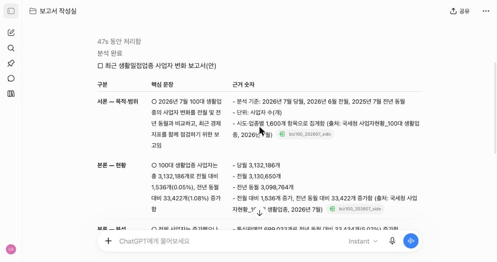
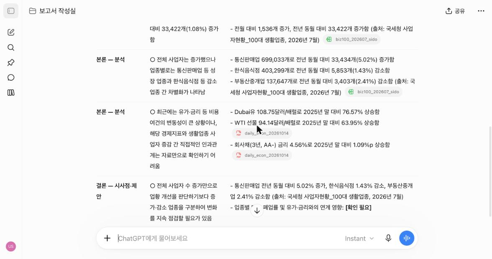
| 뼈대 속 숫자 | 기준값 |
|---|---|
| 통신판매업 (전년 동월 대비) | 699,033개, +33,434개(+5.02%) |
| 한식음식점 (전년 동월 대비) | 403,299개, −5,853개(−1.43%) |
| 부동산중개업 (전년 동월 대비) | 137,647개, −3,403개(−2.41%) |
3-4. 개조식 문체·표준 서식으로 교정하고 Word·PDF로 받기
같은 대화에서 이어서 뼈대를 1쪽 보고서로 바꾸고, 내려받을 수 있는 파일로 받아요.
역할: 너는 부서장 보고용 문서를 다듬는 담당자야. 맥락: 위 뼈대를 부서장에게 올릴 1쪽 보고서로 완성하려고 해. 작업: 표를 풀어 '개요 - 현황 - 문제점 - 개선방안 - 향후 계획' 순서의 개조식 보고서로 바꿔 줘. 숫자는 위 표에 있는 것만 쓰고, 표에 없는 개선방안·일정·담당자는 [확인 필요]로 남겨 줘. 형식: 내려받을 수 있는 Word(.docx) 파일 1개, A4 1쪽, 제목은 '최근 생활밀접업종 사업자 변화 보고'
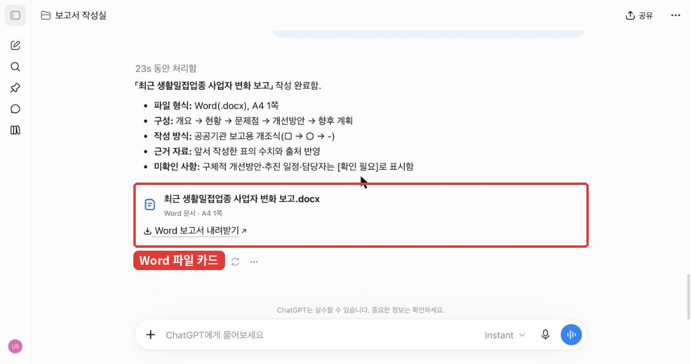
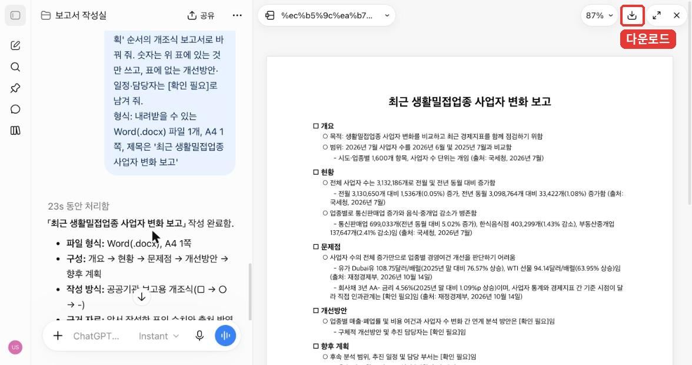
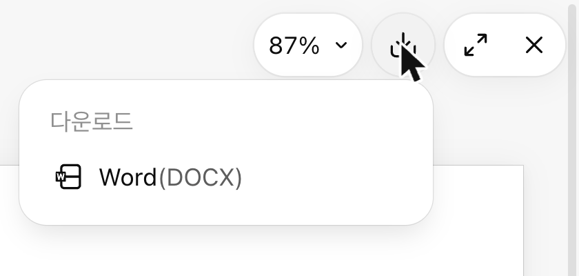
내려받은 파일 이름이 %EC%B5…처럼 깨져 보이면 알아보기 쉬운 이름으로 바꿔 저장해요.
PDF가 필요하면 같은 대화에서 이어서 보내요.
작업: 같은 보고서를 PDF 파일로도 만들어 줘. 내용과 숫자는 바꾸지 마. 형식: 내려받을 수 있는 PDF 파일 1개, A4 1쪽
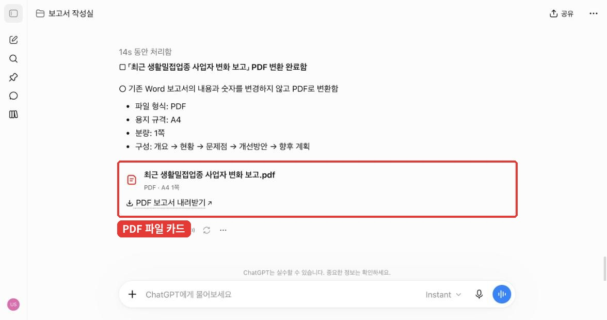
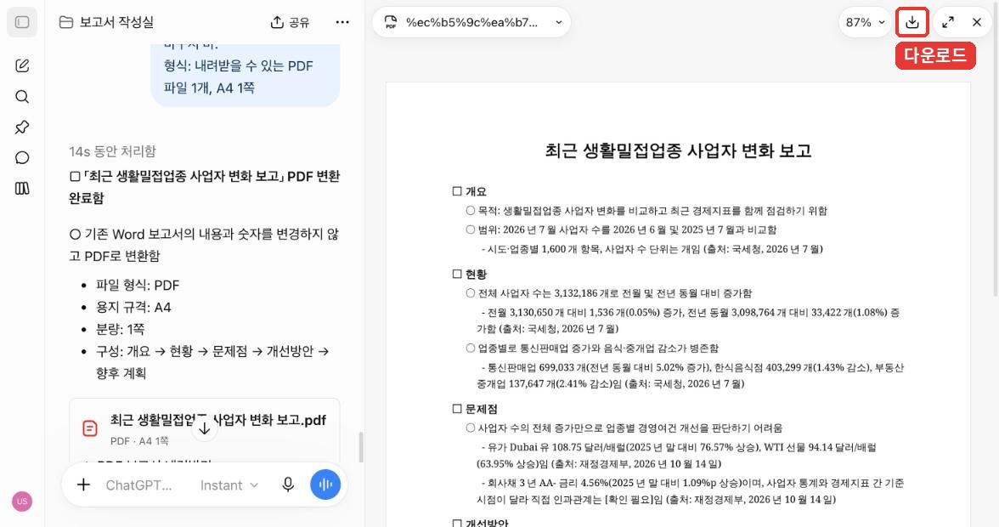
3-5. 섹션 간 일관성 점검
3-1의 네 가지 기준으로 AI에게 점검을 맡기고, 고칠지는 내가 정해요.
역할: 너는 보고서를 검토하는 선임이야. 맥락: 위에서 만든 보고서를 부서장에게 올리기 전에 마지막으로 점검하려고 해. 작업: ① 개요의 목적에 향후 계획이 답하는지 ② 문제점의 숫자가 현황과 같은지 ③ 같은 대상을 다른 이름으로 부른 곳이 있는지 ④ 숫자의 기준 날짜가 맞는지 점검해 줘. 문서는 고치지 말고 점검 결과만 알려 줘. 형식: 기준 / 문제 위치 / 문제 내용 / 고칠 문장 제안 표
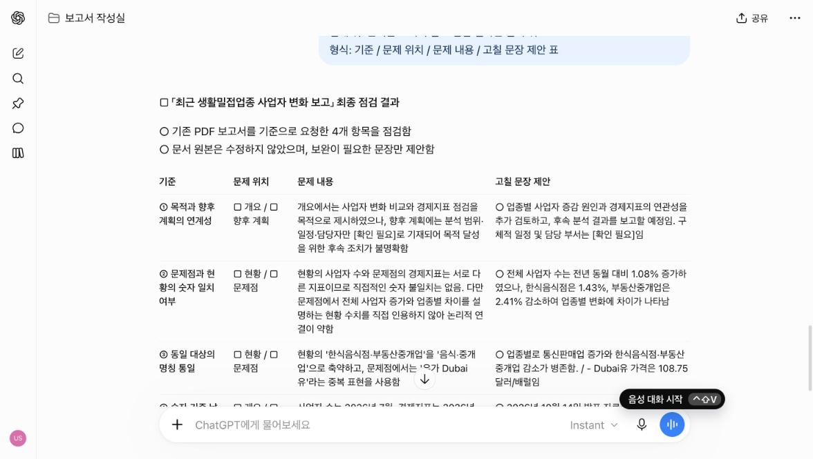
"문서는 고치지 말고"라고 쓰는 이유는, AI가 고치면서 숫자나 표현을 함께 바꿔 버리는 일이 있기 때문이에요. 제안을 보고 필요한 곳만 고쳐 달라고 다시 요청해요.
데이터 분석 & 인포그래픽 변환
생활업종 사업자 현황 원본(24,613행)을 점검하고 요약한 뒤, 보고서에 넣을 표·차트를 만들고, 결론을 인포그래픽 한 장으로 바꿔요.
4-1. 데이터 파일 올리고 시트 화면으로 보기
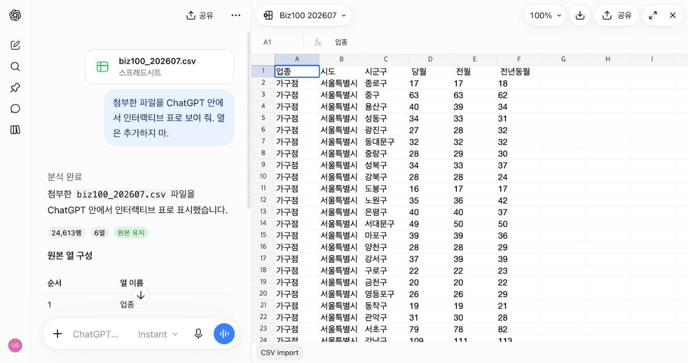
- 일반 새로고침: 브라우저 주소창 옆 새로고침 버튼을 누르거나, 맥은 ⌘+R, 윈도우는 F5를 눌러요.
- 강제 새로고침: 맥은 ⌘+Shift+R, 윈도우는 Ctrl+Shift+R(또는 Ctrl+F5)를 눌러요.
- 인터넷 기록 삭제: 크롬에서 맥은 ⌘+Shift+Delete, 윈도우는 Ctrl+Shift+Delete를 눌러 [인터넷 사용 기록 삭제] 창을 열어요. 캐시된 이미지 및 파일을 체크하고 [데이터 삭제]를 눌러요. 쿠키까지 지우면 ChatGPT에 다시 로그인해야 해요.
4-2. 데이터 요약: 점검 후 자주 쓰는 분석 4가지
같은 대화에서 이어서 요청해요. 요청마다 결과를 아래 기준값과 대조해요.
준비. 분석 전 점검
역할: 너는 데이터 분석 담당자야. 맥락: 첨부한 biz100_202607.csv는 국세청 100대 생활업종 사업자 현황이야. 당월은 2026년 7월, 전월은 2026년 6월, 전년동월은 2025년 7월 사업자 수야. 작업: 분석 전에 데이터를 점검해 줘. 열 이름 앞뒤 공백, 빈칸, 중복 행, 음수를 확인하고, 데이터는 고치지 말고 결과만 알려 줘. 형식: 점검 항목 / 결과 표. 마지막 줄에 전체 행 수·업종 수·시도 수를 한 줄로
| 점검 항목 | 기준값 |
|---|---|
| 열 이름 앞뒤 공백 | 3개 (당월, 전월, 전년동월) |
| 빈칸 | 시군구 100건 (세종특별자치시는 시군구가 없어 빈칸) |
| 중복 행 · 음수 | 0건 · 0건 |
| 규모 | 24,613행 · 업종 100개 · 시도 16개 |
분석 1. 비교: 어느 시도에 사업자가 많은가
역할: 너는 데이터 분석 담당자야. 맥락: 위에서 점검한 데이터를 그대로 써. 작업: 시도별 당월 사업자 수와 전체 대비 비중을 구해 줘. 형식: 당월 사업자 수가 큰 순서의 표, 상위 5개 시도
| 시도 | 당월 사업자 수 | 비중 |
|---|---|---|
| 경기도 | 832,486 | 26.6% |
| 서울특별시 | 603,720 | 19.3% |
| 부산광역시 | 191,557 | 6.1% |
| 전남광주통합특별시 | 187,268 | 6.0% |
| 경상남도 | 186,050 | 5.9% |

분석 2. 추세: 전월·전년 동월보다 늘었나 줄었나
역할: 너는 데이터 분석 담당자야. 맥락: 위에서 점검한 데이터를 그대로 써. 작업: 전국 합계의 전월 대비·전년 동월 대비 증감과 증감률을 구하고, 전년 동월 대비 증가 수가 큰 업종 3개와 감소 수가 큰 업종 3개를 찾아 줘. 형식: 표 2개 (전국 합계 / 업종 증가·감소 상위 3개)
| 전국 합계 | 사업자 수 | 당월과의 차이 |
|---|---|---|
| 당월 (2026.7) | 3,132,186 | - |
| 전월 (2026.6) | 3,130,650 | +1,536 (+0.05%) |
| 전년동월 (2025.7) | 3,098,764 | +33,422 (+1.08%) |
| 구분 | 업종 (전년 동월 대비) |
|---|---|
| 증가 상위 3 | 통신판매업 +33,434(+5.0%) · 실내장식가게 +4,132(+4.7%) · 펜션ㆍ게스트하우스 +3,854(+11.4%) |
| 감소 상위 3 | 한식음식점 −5,853(−1.4%) · 부동산중개업 −3,403(−2.4%) · 옷가게 −3,209(−4.0%) |
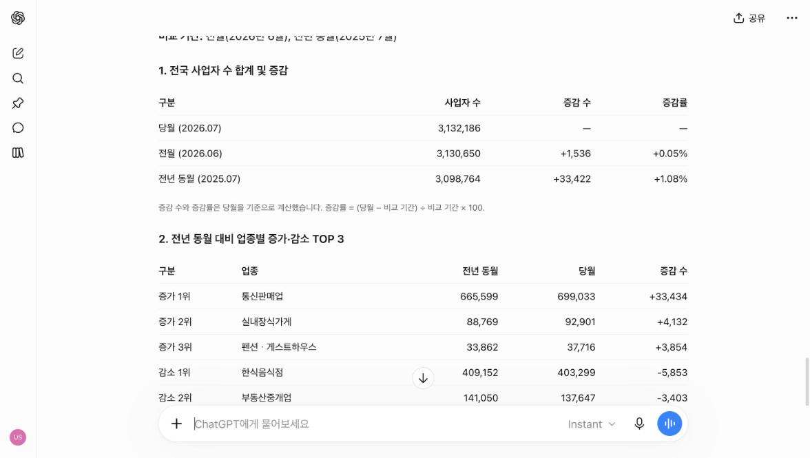
분석 3. 구성비: 어떤 업종이 대부분을 차지하나
역할: 너는 데이터 분석 담당자야. 맥락: 위에서 점검한 데이터를 그대로 써. 작업: 업종별 당월 사업자 수, 전체 대비 비중, 누적 비중을 구해 줘. 형식: 당월 사업자 수가 큰 순서의 표, 상위 5개 업종
| 업종 | 당월 사업자 수 | 비중 | 누적 비중 |
|---|---|---|---|
| 통신판매업 | 699,033 | 22.3% | 22.3% |
| 한식음식점 | 403,299 | 12.9% | 35.2% |
| 부동산중개업 | 137,647 | 4.4% | 39.6% |
| 미용실 | 118,591 | 3.8% | 43.4% |
| 커피음료점 | 93,623 | 3.0% | 46.4% |
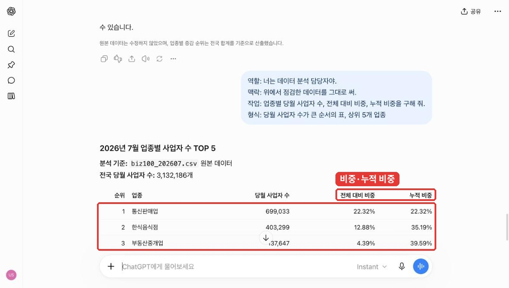
분석 4. 교차: 시도마다 업종 구성이 다른가
역할: 너는 데이터 분석 담당자야. 맥락: 위에서 점검한 데이터를 그대로 써. 작업: 커피음료점·편의점·한식음식점 3개 업종의 당월 사업자 수를 경기도·서울특별시·부산광역시·경상남도·인천광역시별로 구해 줘. 형식: 행은 시도, 열은 업종인 교차표
| 시도 | 커피음료점 | 편의점 | 한식음식점 |
|---|---|---|---|
| 경기도 | 20,504 | 13,792 | 85,631 |
| 서울특별시 | 16,572 | 8,327 | 54,504 |
| 부산광역시 | 5,555 | 2,828 | 24,620 |
| 경상남도 | 6,336 | 3,233 | 32,833 |
| 인천광역시 | 4,562 | 2,942 | 19,685 |

숫자가 다르면 "계산에 쓴 행 수와 열 이름을 알려 줘"라고 물어보세요. 열 이름의 공백 때문에 '당월' 열을 못 찾거나 다른 열을 더한 경우가 많아요.
4-3. 보고서 삽입용 깔끔한 표·차트 구성법
차트 종류는 무엇을 보여 주고 싶은지로 골라요. 실습은 첫 줄의 가로 막대로 하고, 나머지 두 가지는 같은 프롬프트에서 차트 종류와 분석 번호만 바꿔 만들어요.
| 보여 주고 싶은 것 | 어울리는 차트 | 예시 |
|---|---|---|
| 항목끼리 크기 비교 | 가로 막대 | 시도별 사업자 수 상위 5 |
| 늘어난 것과 줄어든 것 | 0을 기준으로 한 막대 | 업종 증가·감소 상위 3 |
| 전체 중 비중 | 누적 막대 또는 원 | 업종별 비중 상위 5 |
역할: 너는 보고서용 그림을 만드는 담당자야. 맥락: 분석 1의 시도별 당월 사업자 수 상위 5개 결과로 보고서에 넣을 차트가 필요해. 작업: 가로 막대 차트를 만들어 줘. 숫자는 분석 1 결과만 쓰고 바꾸지 마. 형식: 제목 "시도별 생활업종 사업자 수(2026년 7월, 상위 5)", 막대 끝에 사업자 수 표시, 단위는 '개'로 통일
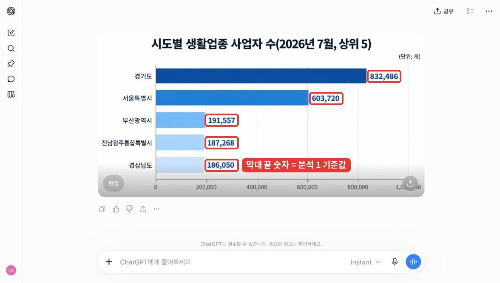
4-4. 글을 인포그래픽·도식으로 바꾸기 (NotebookLM)
보고서의 결론과 근거를 한 장의 그림으로 보여 줘요. NotebookLM은 내가 넣은 글만 바탕으로 그림을 만들어서, 짧고 구조가 분명한 글을 넣을수록 잘 나와요.
STEP 1. ChatGPT로 인포그래픽용 글 만들기 — 4-2 대화에서 이어서 보내요.
역할: 너는 보고서 결론을 한 장 그림으로 정리하는 담당자야. 맥락: 위 분석 1~4 결과로 인포그래픽을 만들 거야. 그림 도구는 내가 넣은 글만 보고 그려. 작업: 인포그래픽에 넣을 글을 만들어 줘. 숫자는 위 결과에 있는 것만 쓰고 바꾸지 마. 형식: 제목 1줄, 핵심 메시지 3개(각 1줄 + 근거 숫자 1개), 마지막에 출처 1줄. 전체 10줄 이내
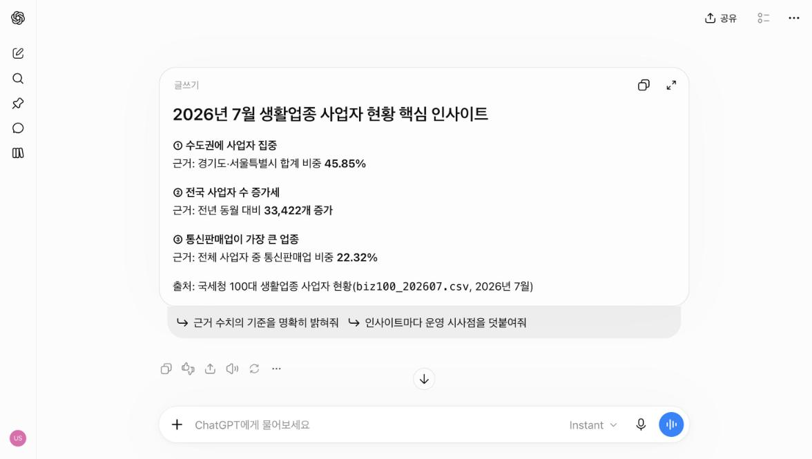
근거 숫자가 위 기준값과 같은지 확인해요. 예를 들어 "수도권 비중 45.85%"는 경기도 26.58%와 서울특별시 19.27%를 더한 값이에요.
STEP 2. NotebookLM에서 인포그래픽 만들기 — notebooklm.google.com에 들어가면 화면 위쪽에 Gemini Notebook이라는 이름으로 열려요.
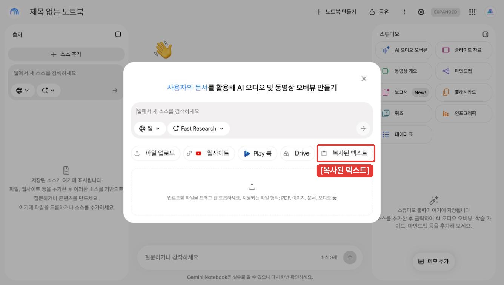
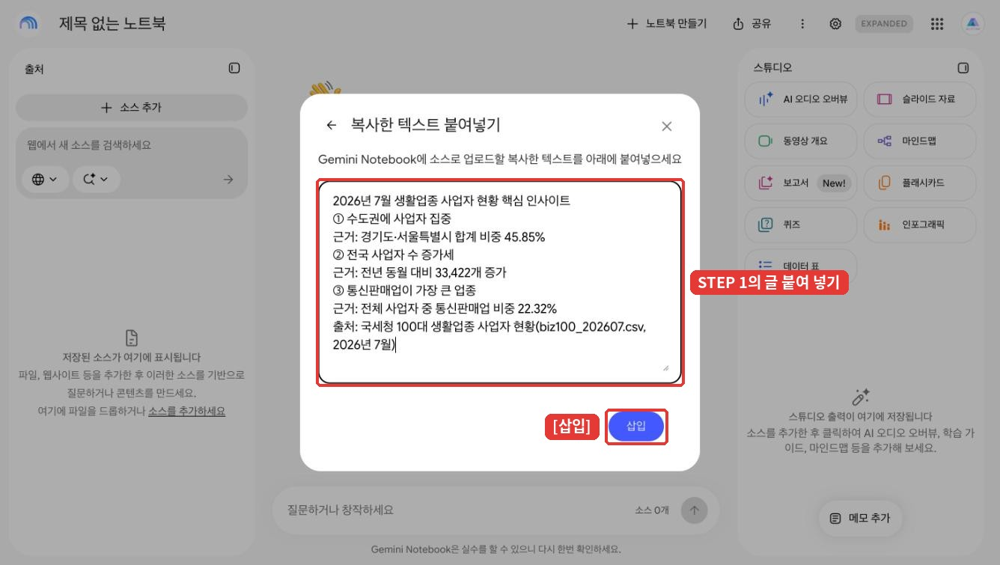
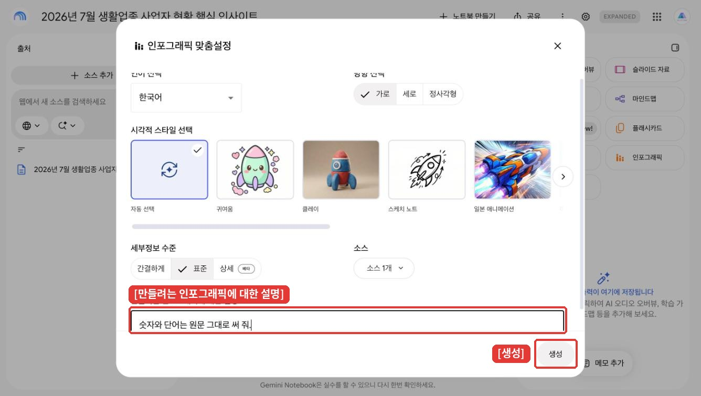
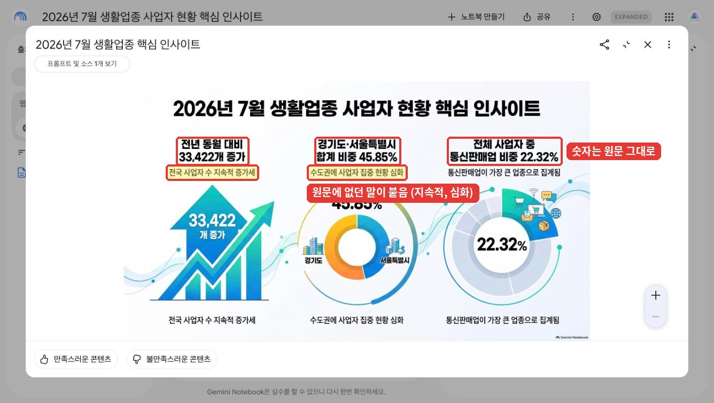
가이드 기반 실무 기획서 제작 실습
오전과 오후에 익힌 순서 그대로, 내 업무와 가까운 주제로 자료 수집 → 초안 → 문체·시각화까지 기획서를 직접 완성해요.
5-1. 실무 예시 주제 정하고 업무 흐름 스케치하기
실제로 써야 하는 문서를 하나 골라요. 정하기 어렵다면 아래 예시에서 골라도 좋아요.
| 문서 | 주제 예시 | 독자 |
|---|---|---|
| 기획서 | 우리 부서 민원 응대에 생성형 AI 도입 시범 운영 | 부서장, 경영진 |
| 기획서 | 지역 사업주 대상 지원 제도 안내 방식 개선 | 관련 부서 |
| 보고서 | 우리 부서 3분기 사업 추진 실적 | 팀장, 부서장 |
| 보고서 | 최근 생활밀접업종 변화와 지역 사업주 지원 시사점 (오늘 실습 데이터 활용) | 기획부서 |
주제를 정했다면 메모장에 세 줄을 적어요: ① 누가 읽나 ② 읽고 나서 무엇을 결정해야 하나 ③ 꼭 들어가야 할 숫자나 자료.
내 업무 흐름 스케치하기 — 이 문서를 만들 때 실제로 하는 일을 파악 → 정리 → 요약 → 분석 → 보고 다섯 칸으로 나눠 적어요. 칸마다 AI에게 맡길 일과 내가 직접 할 일을 나누면, 5-3의 Step 1~3에서 무엇을 요청할지 정해져요.
| 단계 | 예시: 민원 응대 생성형 AI 시범 운영 기획서 | AI에게 맡길 일 | 내가 할 일 | 5-3에서 |
|---|---|---|---|---|
| 파악 | 지금 민원 응대 방식과 불편한 점 | 맡기지 않아요 (내부 상황) | 위 세 줄과 부서 현황을 메모장에 적기 | 시작 전 |
| 정리 | 정부·공공기관의 관련 정책·사례 모으기 | [웹 검색]으로 5줄 요약 (2-1) | 링크를 열어 기관·날짜 확인 | Step 1 |
| 요약 | 추진 배경에 쓸 숫자 확인 | 새 채팅에서 팩트체크 (2-3) | 기관 원문과 숫자 대조 | Step 1 |
| 분석 | 목표·추진 내용·일정 구성, 빈칸 찾기 | Projects 지침으로 초안 (3-2, 3-3) | [확인 필요] 칸 채우기 | Step 2 |
| 보고 | 표 넣기, 점검, 파일로 받기 | 표·Word·PDF·일관성 점검 (3-4, 3-5) | 최종 판단과 승인 | Step 3 |
메모장에 위 표의 첫 열(파악·정리·요약·분석·보고)만 옮겨 적고, 둘째 열을 내 업무로 채워요. AI에게 맡길 칸과 내가 할 칸은 표를 참고해 표시해요.
5-2. 3단계로 진행하기: 자료 수집·요약 → 초안 → 문체·시각화
| 시간 | 단계 | 쓰는 기능 | 참고 |
|---|---|---|---|
| 14:30–14:40 | 주제·독자·결정할 것 세 줄, 업무 흐름 스케치 | 메모장 | 5-1 |
| 14:40–15:10 | Step 1 자료 수집·요약, 숫자 확인 | [웹 검색] | 2-1, 2-3 |
| 15:10–15:35 | Step 2 기획서 초안 | Projects | 3-2, 3-3 |
| 15:35–16:00 | Step 3 표 넣기, 일관성 점검, Word·PDF 받기 | Projects, Word·PDF 파일 | 3-4, 3-5 |
5-3. 단계별 템플릿
[ ] 안을 5-1에서 적은 내용으로 바꿔 차례로 보내요. Step 2부터는 3-2에서 만든 보고서 작성실 프로젝트 안에서 진행해요.
Step 1. 자료 수집·요약 (새 채팅, [웹 검색] 켜기)
역할: 너는 공공기관 기획부서의 자료 조사 담당자야. 맥락: [독자]에게 '[주제]' 기획서를 올리려고 해. 읽고 나서 [결정해야 할 것]을 정해야 해. 작업: 최근 1년 안에 정부·공공기관이 발표한 관련 자료를 찾아 기획서 '추진 배경'에 쓸 핵심 내용을 5줄로 요약해 줘. 출처를 찾지 못한 내용은 쓰지 마. 형식: 5줄 글머리표, 줄마다 (기관명, 발표일, 링크)
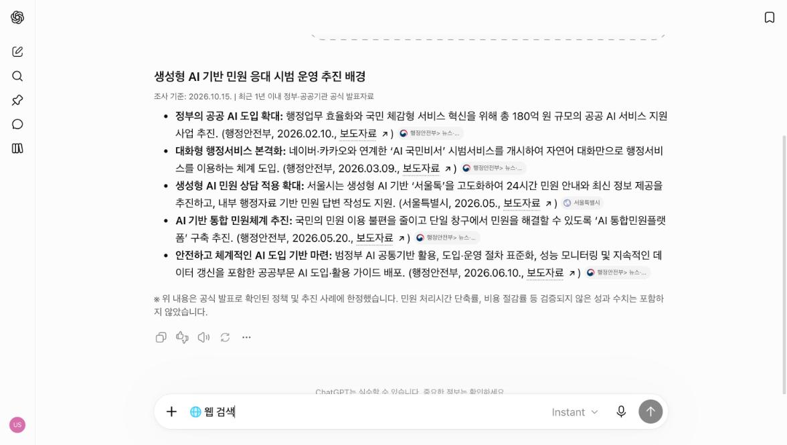
숫자가 들어간 줄은 2-3처럼 새 채팅에서 한 번 더 확인한 뒤 Step 2로 넘어가요.
Step 2. 기획서 초안 (보고서 작성실 프로젝트의 새 채팅)
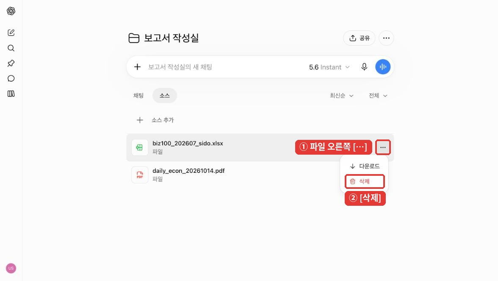
역할: 너는 공공기관 기획부서의 기획서 작성 담당자야. 맥락: 주제는 [주제], 독자는 [독자]야. Step 1에서 모은 자료는 아래와 같아. [Step 1 결과 붙여넣기] 작업: '추진 배경 - 목표 - 추진 내용 - 기대 효과 - 추진 일정' 순서로 기획서 초안을 써 줘. 자료에 없는 숫자·예산·일정·담당자는 [확인 필요]로 남겨 줘. 형식: 개조식, A4 2쪽 이내
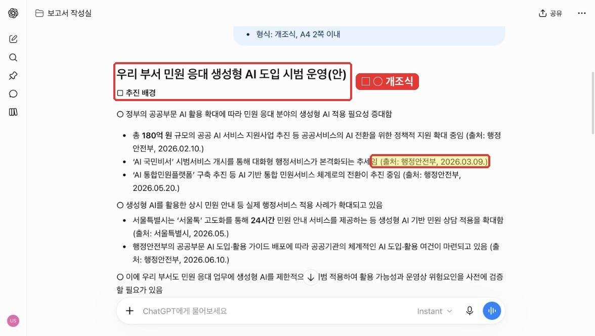
Step 3. 문체·시각화 완성 (같은 대화에서 이어서)
역할: 너는 부서장 보고 전에 문서를 다듬는 담당자야. 맥락: 위 기획서 초안의 [확인 필요]는 아래처럼 채웠어. [내가 확인한 숫자·일정·담당자] 작업: 채운 내용을 반영하고, 핵심 숫자 1개를 보여 주는 표 1개를 '추진 배경'에 넣어 줘. 숫자는 바꾸지 마. 형식: 내려받을 수 있는 Word(.docx) 파일 1개와 PDF 파일 1개
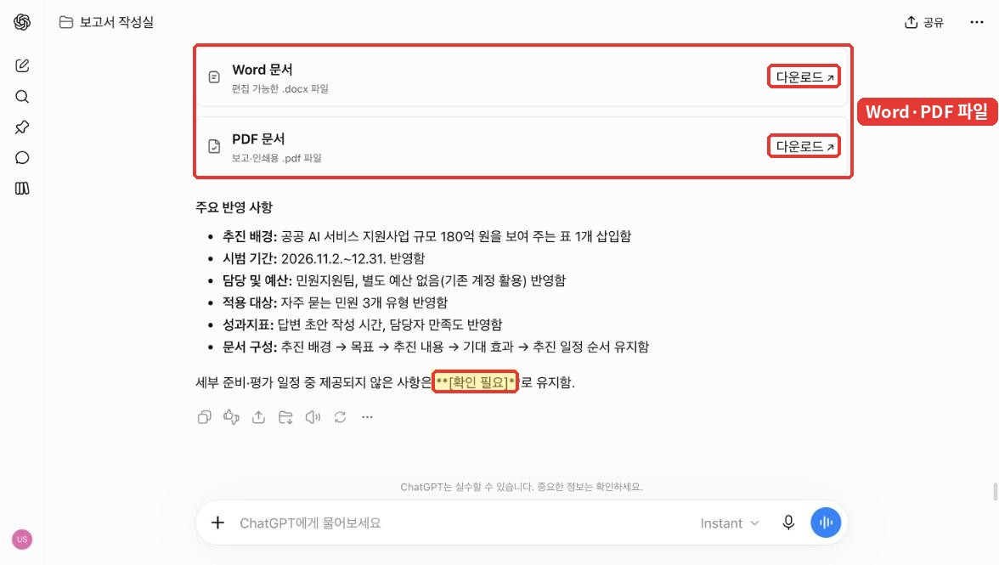
Step 3 마무리. 일관성 점검 (같은 대화에서 이어서) — 3-5의 네 가지 기준을 기획서 항목 이름으로 바꾼 프롬프트예요.
역할: 너는 기획서를 검토하는 선임이야. 맥락: 위에서 만든 기획서를 부서장에게 올리기 전에 마지막으로 점검하려고 해. 작업: ① 목표에 추진 내용과 추진 일정이 답하는지 ② 기대 효과의 숫자가 추진 배경의 숫자와 같은지 ③ 같은 대상을 다른 이름으로 부른 곳이 있는지 ④ 숫자의 기준 날짜가 맞는지 점검해 줘. 문서는 고치지 말고 점검 결과만 알려 줘. 형식: 기준 / 문제 위치 / 문제 내용 / 고칠 문장 제안 표
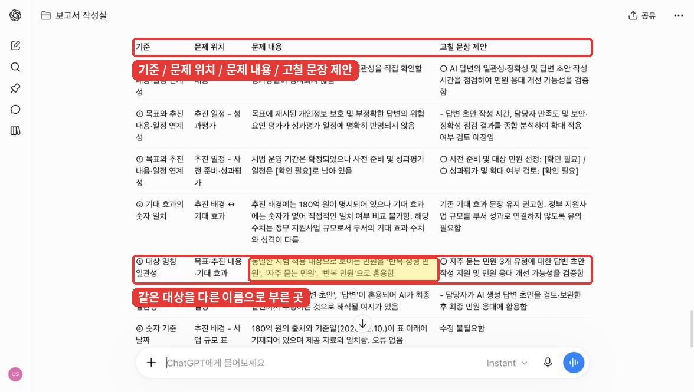
결과 발표 및 피드백
완성한 보고서·기획서를 3분 동안 발표하고, 피드백 기준으로 서로 점검한 뒤 질의응답으로 마무리해요. 보안·개인정보 주의사항은 맨 아래 참고사항에 있어요.
6-1. 3분 발표 구성
| 순서 | 말할 것 | 시간 |
|---|---|---|
| 1 | 주제와 독자: 누구에게 무엇을 결정하게 하려는 문서인가 | 30초 |
| 2 | 핵심 목표 또는 결론 한 줄 | 30초 |
| 3 | 근거: 자료와 숫자, 출처 | 1분 |
| 4 | AI를 어디에 썼고, 무엇을 직접 확인·수정했나 | 1분 |
6-2. 피드백 기준 · Q&A · 총평
| 기준 | 확인할 질문 |
|---|---|
| 사실 | 숫자와 출처, 기준 날짜가 맞나요? 확인하지 않은 내용이 섞여 있지 않나요? |
| 논리 | 목표·결론이 근거에서 자연스럽게 나오나요? 섹션끼리 이어지나요? |
| 문체 | 개조식과 기호 체계가 끝까지 일정한가요? |
| 실행 가능성 | 누가, 언제, 무엇을 하는지 분명한가요? |
오늘 쓴 프롬프트 남기기: 잘 된 프롬프트는 메모장이나 프로젝트 지침에 모아 두세요. 다음 보고서를 쓸 때 [ ] 안만 바꿔 다시 쓸 수 있어요.
참고사항
실무에서 AI를 쓸 때 지켜야 할 보안·개인정보 주의사항과, 최근 국내 기관이 발표한 AI 사용 보안 권고를 모았어요.
보안·개인정보(PII) 주의사항
개인정보(PII)는 이름, 연락처, 주민등록번호처럼 특정 사람을 알아볼 수 있는 정보예요. AI에 올리기 전에 아래 네 가지를 지켜요.
- 기관 보안 기준에서 쓸 수 있는 도구와 올릴 수 있는 자료의 범위를 먼저 확인해요.
- 이름·연락처·주민등록번호·계좌번호 같은 개인정보는 지우거나 가상 값으로 바꿔요.
- 공개 전 내부 문서(예산안, 인사 자료 등)는 올리지 않아요.
- 업무 자료를 다루는 프로젝트는 [프로젝트 전용 메모리]로 만들어요. (3-2)
기록에 남기지 않고 묻고 싶을 때: 임시 채팅
ChatGPT 첫 화면 오른쪽 위 [임시 채팅] 아이콘을 눌러 열어요.
국내 AI 사용 보안 권고 요약
- 국가정보원 「AI 보안 가이드북」(2025.12): 공공기관 대상. 챗GPT·클로드·제미나이 등 생성형 AI를 쓸 때의 보안 설정과 이용 규칙을 안내해요.
- 국가정보원 「N2SF 보안가이드라인」(2025.09): 업무정보를 기밀·민감·공개로 나누고, 등급에 맞게 생성형 AI·클라우드를 쓰도록 해요.
- 개인정보보호위원회 「생성형 AI 이용자 개인정보 보호 가이드」(2026.05): 학습 활용 거부, 대화 기록 삭제 설정을 확인하고 업무 자료 입력에 주의하라고 안내해요.
- 행정안전부 「공공부문 AI 윤리기준」(2026.10): AI가 판단을 돕더라도 최종 책임은 사람에게 있어요.
출처: CIO(2025.12) · 보안뉴스(2025.09.30) · 뉴스서울(2026.05.19) · 행정안전부 보도자료(2026.10.01) · 2026-10-19 확인